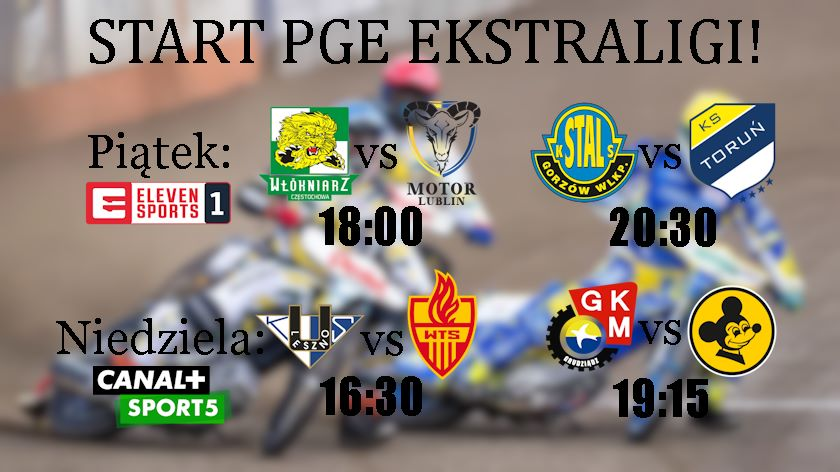

Newsy ze świata SC2023!!!

Właśnie zakończyła się 1 kolejka powracającej symulowanej PGE Ekstraligi i o to wyniki
Mecz Grudziądza z Zieloną Górą zakończył się wynikiem 50:40 dla Grudziądza Falubaz nie radził sobie przez większość meczu źle jednak i tak przegrali
Leszno zostało zdominowane przez Wrocław wynikiem 53:37 dla Wrocławia Artem Łaguta musiał pojechać na badania z powodu groźnego wypadku jednak obyło się bez kontuzji
Gorzów pokonał Toruń wynikiem 46:44 mecz był chyba najciekawszy z dzisiaj wymienionych ponieważ walka toczyła się do samego końca
A Lublin pokonał Częstochowe bez większych problemów i zaskoczeń